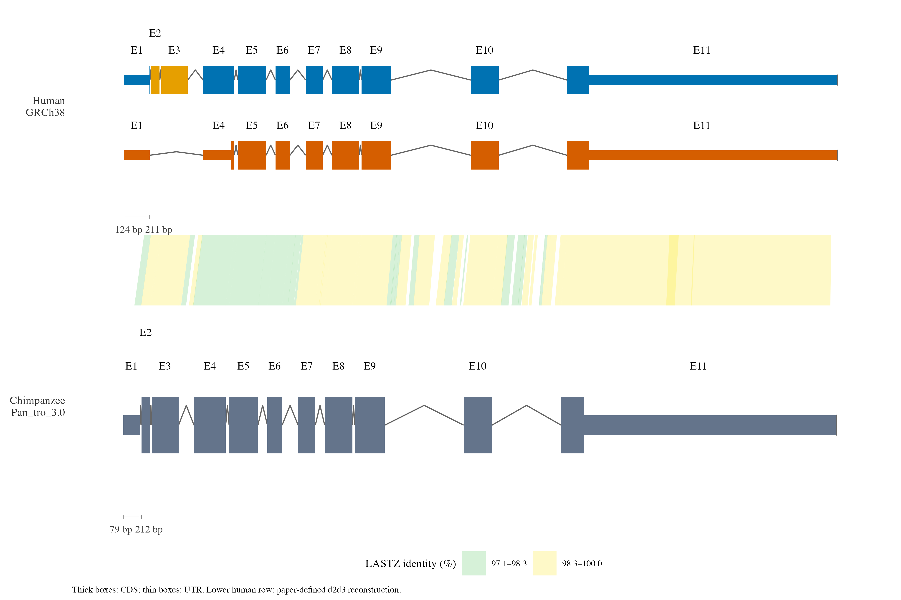
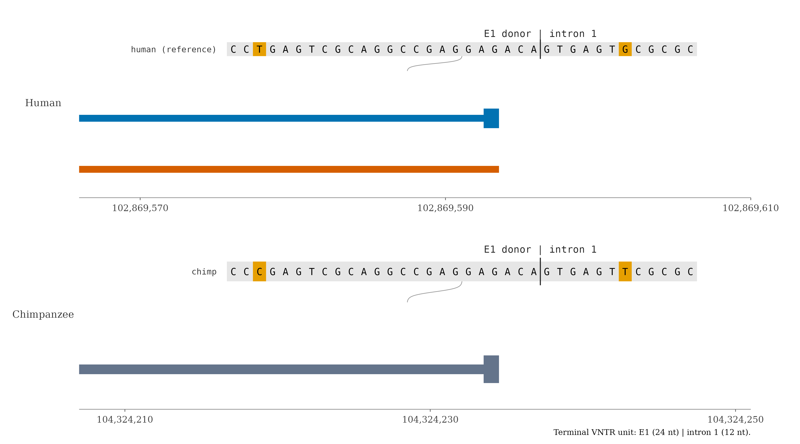

2. Comparing alternatively spliced transcripts
Source:vignettes/as3mt-splice-variants-demo.Rmd
as3mt-splice-variants-demo.RmdCompare transcript structures, then add evidence
This example compares human full-length AS3MT, a paper-defined d2d3 reconstruction, and chimpanzee full-length AS3MT. The reconstructed human transcript skips exons 2 and 3. We first compare the transcript models, then inspect DNA at the exon-1 repeat.
Human coordinates use GRCh38; chimpanzee coordinates use Pan_tro_3.0. Each assembly has its own genomic axis. All inputs are bundled and work offline.
Prepare one comparative Syn object
The loader returns a SynSpecies. It contains two
SynIndividual objects, their feature annotations and a
named human-chimpanzee alignment. Original repeat sequences, source
specifications and supporting evidence stay in the object’s
metadata.
library(ggexon)
library(ggplot2)
demo_dir <- system.file("extdata", "as3mt", package = "ggexon")
source(file.path(demo_dir, "load-as3mt-example.R"), local = TRUE)
source(file.path(demo_dir, "as3mt-object-data.R"), local = TRUE)
as3mt <- load_as3mt_example(demo_dir)
class(as3mt)
#> [1] "SynSpecies"
#> attr(,"package")
#> [1] "ggexon"
individual_names(as3mt)
#> [1] "human" "chimp"
nrow(pairwise_alignment_data(as3mt, alignment = "human_chimp"))
#> [1] 37The alignment contains 37 ungapped LASTZ blocks, selected from the two highest original identity categories.
Prepare reusable annotation views
Prepare the remaining overlays on the same object before plotting:
as3mt <- prepare_as3mt_example(as3mt)
head(as3mt_plot_data(as3mt, "exon_labels")[,
c("id", "exon", "start", "end", "label")])
#> id exon start end label
#> 1 human_full 1 102869470 102869593 E1
#> 2 human_full 2 102869805 102869845 E2
#> 3 human_full 3 102870084 102870211 E3
#> 4 human_full 4 102872448 102872598 E4
#> 5 human_full 5 102873097 102873233 E5
#> 6 human_full 6 102874592 102874661 E6prepare_as3mt_example() is an example helper. It derives
exon labels from stored CDS and UTR features, retains full-reference
exon numbers, and prepares repeat outlines and donor marks. It also runs
alignseq_data() on the stored DNA alignment to prepare
sequence rows and difference markers.
as3mt_plot_data() reads a named prepared view.
Transcript and alignment layers use native Syn dispatch; DNA and
annotation overlays read their prepared views from as3mt.
The source files are loaded once. Genomic positions stay unchanged
during preparation; one scale_x_ggexon_genomic() per plot
supplies intron compression for its layers. Run preparation again after
changing the stored feature models or DNA evidence.
Compare the transcript models
Human full-length AS3MT is blue; d2d3 is orange; chimpanzee AS3MT is grey. Gold identifies E2/E3 in the full-length human model. The reconstructed transcript omits these two exons and retains E1 and E4–E11, including its untranslated first exon.
Define the colours and text settings used below:
base_size <- 8
base_family <- "serif"
text_mm <- base_size / ggplot2::.pt
identity_bands <- levels(as3mt_evidence(as3mt)$links$identity_band)
fill_colours <- c(
human_full = "#0072B2", human_short = "#D55E00", chimp = "#64748B",
skipped_exons = "#E69F00",
stats::setNames(scales::pal_viridis()(length(identity_bands)), identity_bands)
)Build the plot directly from the object.
compress_introns = FALSE disables
geom_exon2()’s own schematic spacing. The shared x scale
then compresses introns 30-fold, preserving exon widths
and keeping links and labels aligned with the transcript models. Select
the human and chimp annotation panels
explicitly.
transcript_plot <- ggexon(as3mt) +
geom_exon2(
aes(xmin = xmin - 0.5, xmax = xmax + 0.5, ymin = isoform_y,
transcripts = transcript_name, fill = exon_class),
species = c("human", "chimp"),
annotation_type = "all", exon_height = 0.42, compress_introns = FALSE,
utr_height = 0.35, cds_height = 1, intron_shape = "chevron",
arrow_width = 1e-8, colour = NA, transcript_backbone_colour = "grey40"
) +
geom_text(
data = function(model) as3mt_plot_data(model, "exon_labels"),
aes(x = x, y = y, label = label),
inherit.aes = FALSE, size = text_mm, family = base_family
) +
geom_nuclink(
aes(fill = identity_band), alignment = "human_chimp",
colour = NA, alpha = 0.25, inherit.aes = FALSE
) +
facet_genomics(
vars(track), scales = "free_x", ncol = 1, link_panel_height = 0.35,
link_axis = "none", link_strip = "blank", annotation_axis = "all",
strip.position = "left",
labeller = as_labeller(c(human = "Human\nGRCh38",
chimp = "Chimpanzee\nPan_tro_3.0", link_human_chimp = ""))
) +
scale_fill_manual(
values = fill_colours, breaks = tail(identity_bands, 2),
name = "LASTZ identity (%)"
) +
scale_x_ggexon_genomic(
intron_factor = 30, guide = guide_x_ggexon_piecewise(by = "panel")
) +
scale_panel_annotation("free_y", limits = list(human = c(0.15, 3.1), chimp = c(0.3, 1.8))) +
labs(x = NULL, y = NULL,
caption = "Thick boxes: CDS; thin boxes: UTR. Lower human row: paper-defined d2d3 reconstruction.") +
theme_ggexon_track(
base_size = base_size, base_family = base_family,
show_x_axis = TRUE, show_x_grid = FALSE, show_legend = TRUE
) +
theme_ggexon_side_strips("left", base_size = base_size, face = "plain") +
theme(
strip.text.y.left = element_text(angle = 0),
legend.position = "bottom", panel.spacing.y = grid::unit(0.35, "lines"),
plot.caption = element_text(hjust = 0)
)
transcript_plot
Transcript models and ungapped DNA similarity. Introns are compressed 30-fold.
The two ribbon colours represent 97.1–98.3% and 98.3–100% LASTZ identity. The 37 blocks split into 57 polygon pieces at scale boundaries. These links show genomic DNA similarity.
Inspect DNA at the exon-1 repeat
The selected human reference contains three 36-bp VNTR units; the chimp reference has one imperfect homolog, with 34 of 36 matching bases. The terminal unit spans 24 exonic and 12 intronic bases. Both references retain the GT donor:
CCTGAGTCGCAGGCCGAGGAGACA | GTGAGTGCGCGC
human exon 1 | intron 1The aligned strings and genomic anchors are stored in
as3mt. Preparation uses an explicitly named human reference
in alignseq_data(). A - is an alignment gap
and consumes no genomic base. The donor-anchored alignment, verified
against the bundled FASTAs, places 72 chimp gap columns opposite two
human repeat copies.
For a close-up, use two annotation panels and change the windows on a
copy of the same Syn object. geom_alignseq() currently
requires its prepared table explicitly, so query the stored
dna_rows view. Gene models still resolve from the Syn
object:
sequence_model <- as3mt
species_layout(sequence_model) <- SynLayout(
panels = data.frame(PANEL = 1:2, ROW = 1:2, COL = 1,
track = c("human", "chimp"), species = c("human", "chimp"),
panel_type = "annotation", SCALE_X = 1:2, SCALE_Y = 1:2),
free = list(x = TRUE, y = TRUE)
)
sequence_model <- set_panel_xlim(
sequence_model, individual = c("human", "chimp"),
xlim = list(human = c(102869568, 102869608), chimp = c(104324209, 104324249)),
xlim_chr = c(human = "chr10", chimp = "chr10")
)
sequence_plot <- ggexon(sequence_model) +
geom_exon2(
aes(xmin = xmin - 0.5, xmax = xmax + 0.5, ymin = isoform_y,
transcripts = transcript_name, fill = exon_class),
annotation_type = "all", exon_height = 0.42,
compress_introns = FALSE, utr_height = 0.35, cds_height = 1,
arrow_width = 1e-8, colour = NA
) +
geom_alignseq(
data = as3mt_plot_data(sequence_model, "dna_rows"), mode = "rows",
colour_scheme = "difference", size = text_mm, family = "mono"
) +
facet_genomics(vars(track), scales = "free_x", ncol = 1,
strip.position = "left", labeller = as_labeller(c(human = "Human", chimp = "Chimpanzee"))) +
scale_fill_manual(values = fill_colours, guide = "none") +
scale_x_continuous(labels = scales::label_number(big.mark = ","),
n.breaks = 3, oob = scales::oob_keep) +
scale_panel_annotation("free_y", limits = list(human = c(0.3, 4.4), chimp = c(0.3, 3.2))) +
labs(x = "Assembly-specific chr10 genomic coordinates", y = NULL,
caption = "Terminal VNTR unit: E1 (24 nt) | intron 1 (12 nt).") +
theme_ggexon_track(base_size = base_size, base_family = base_family,
show_x_axis = TRUE, show_x_grid = FALSE) +
theme(strip.text.y.left = element_text(angle = 0),
plot.margin = margin(6, 40, 6, 6))
sequence_plot
Sequence letters are equally spaced schematically. Their connector anchors use genomic positions. Grey marks aligned bases, orange marks mismatches, and red marks indels. The DNA colours are independent of transcript colours.
Combine the evidence
Reuse transcript_plot and add the stored DNA markers,
repeat outlines and donor marks. Each species displays its own sequence
callout. All genomic anchors follow the same scale as the corresponding
transcript model:
Set panel heights in row order: human annotation, genomic links, then chimpanzee annotation. The chimpanzee panel is half the human panel’s height; the link panel keeps its compact height.
combined_plot <- transcript_plot +
geom_alignseq(
data = as3mt_plot_data(as3mt, "dna_markers"), colour_scheme = "difference",
size = text_mm, family = "mono"
) +
geom_rect(
data = function(model) as3mt_plot_data(model, "repeats"),
aes(xmin = start - 0.5, xmax = end + 0.5, ymin = y + 0.08, ymax = y + 0.34),
inherit.aes = FALSE, fill = NA, colour = "#CC79A7", linewidth = 0.55
) +
geom_segment(
data = function(model) as3mt_plot_data(model, "donors"),
aes(x = x, xend = x, y = y, yend = yend),
inherit.aes = FALSE, colour = "grey20", linewidth = 0.35
) +
scale_panel_annotation("free_y", limits = list(human = c(0.15, 4.1), chimp = c(0.2, 2.8))) +
theme(panel.heights = grid::unit(c(1, 0.35, 0.5), "null")) +
labs(caption = paste(
"VNTR units are outlined in purple.",
"Chimp −72 bp is relative to the selected human reference; d2d3 is a reconstructed model.",
sep = "\n"
))
combined_plot
One comparative Syn object supplies transcript structures, genomic links and DNA detail.
Cai et al. tested otherwise matched two- and three-repeat human minigenes; three repeats produced more d2d3. This supports repeat-dependent splicing regulation, but does not establish sufficiency for the isoform’s evolutionary origin. The human allele experiment differs by 36 bp. The figure’s −72 bp marker compares the selected chimp and human references. Two base differences in the chimp homolog are sequence context, not demonstrated causal SNVs.
Sources and reproducibility
- Li et al. (2016), doi:10.1038/nm.4096: d2d3 reconstruction and repeat sequence.
- Cai et al. (2021), doi:10.1093/schbul/sbaa098: human VNTR minigene comparison.
The installed extdata/as3mt directory contains all
inputs, example preparation functions and provenance.
as3mt_evidence(as3mt) retains the original repeat
sequences, source specifications and alignment evidence for
inspection.
Repository preparation and export scripts are in
data-raw/as3mt. Genomic ribbons use LASTZ
--nogapped --chain blocks. Existing figure-export helpers
remain available; the plotting commands used in this tutorial are shown
above.